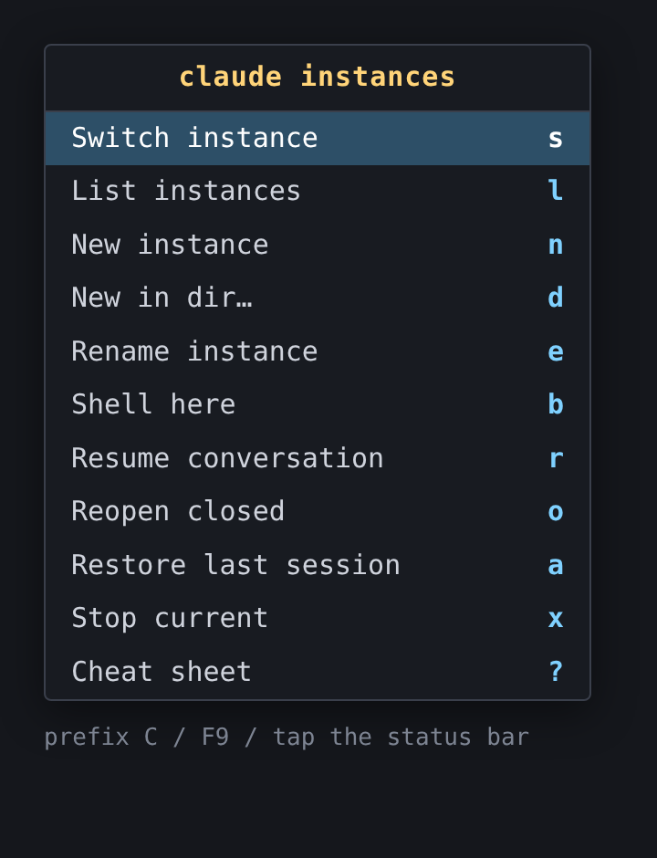

Manage and stream multiple Claude Code instances inside a single, persistent tmux session — reachable from a phone over Tailscale + Termux, tuned for a small touchscreen. One tmux session, one Claude per window. Portable: no hardcoded users, paths, hosts, or terminals.
Requirements: tmux ≥ 3.2 and jq are
required (jq backs the JSONL instance registry; install.sh
checks for both). flock (util-linux) is used for safe registry
migrations. Optional: bash-completion, fzf,
notify-send/curl, and a terminal emulator.
| File | Purpose |
|---|---|
cj | Primary join command — attach, reuse/spawn an instance, optional auto-name. |
claude-ls | Print active + closed instances with names and colors. |
claude-pick | Interactive picker (fzf): select an active instance to switch, a closed one to reopen. |
claude-new | Open a new named/colored instance (new / resume / continue). |
claude-restore | Reopen a closed instance from the registry in its old directory. |
claude-popup | Run a view (ls/help) inside a tmux popup, pausing for a key. |
claude-notify | Notify (desktop / ntfy / Pushover) when an instance needs attention. |
claude-snapshot | Save active instances (name + dir) for restore after reboot. |
claude-restore-all | Reopen the last session's instances (boot hook or manual). |
claude-watchdog | Opt-in: restart a crashed instance in place (pane-died hook). |
claude-rename | Rename an instance (window + registry). |
claude-shell | Open an interactive shell window (for commands Claude can't run), in the current dir. |
claude-ask | Run an interactive command (ssh-add/sudo/OTP/login) in a grouped window so a human answers a prompt Claude can't type; run/send/wait/close. |
claude-cd | Move the current instance to a chosen directory, relaunching it there (resume) + updating the registry. |
claude-hook | Claude Code hook dispatcher: records per-instance status + notifies on approval prompts. |
claude-status | Summarize instance status (⚠ needs-approval / ⚙ working) for the tmux status bar. |
claude-cost | Token usage + estimated cost per active instance (and total), from transcripts. |
claude-model | Pick a model (and optional effort) interactively, then open a new instance with them. |
completions/claude-sessions.bash | Bash completion (sourced from ~/.bashrc). |
tests/lib.bats | Unit tests for lib.sh (run with bats tests/). |
tests/integration.sh | End-to-end tests: fzf picker (send-keys in a pane) + popup exec (display-popup); private socket; skips without tmux/fzf. |
tests/watchdog.sh | Watchdog crash/respawn/give-up logic against a fake tmux (run with bash tests/watchdog.sh). |
claude-session | General launcher: build a named session, one Claude per window (resume modes, -a). |
lib.sh | Shared helpers: config, naming schemes, color palette, the instance registry. |
config.example | Default config (name_scheme, auto_name). |
tmux.conf | Phone-friendly tmux settings; sources the generated key bindings. |
tmux/bindings.conf.in | Template for the menu + key bindings (@BIN@ filled at install). |
tmux/cheatsheet.txt | Hotkey cheat sheet shown by prefix+? . |
install.sh | Portable, idempotent installer. |
systemd/claude-tmux.service.in | Template for the boot-autostart user service. |
applications/claude-join.desktop.in | Template for the desktop shortcut. |
README.md | Quick reference. |
Optional auto-naming (flag -a, or auto_name = true in
config) gives each instance a short name and a stable color shown in the tmux
status bar and the list. The end user picks the convention.
| Scheme | Names | Color |
|---|---|---|
nato | alpha, bravo, charlie, … (then alpha2…) | stable per call-sign position |
project | <cwd-basename>-N | hashed from the name |
random | <adjective>-<noun> | hashed from the name |
Scheme precedence: -a SCHEME flag > $CLAUDE_NAME_SCHEME
> ~/.config/claude-sessions/config (name_scheme) >
nato. Colors are 256-color codes shared by tmux (colourN)
and the ANSI list output.
The registry is JSONL (one JSON object per
line, jq for all read/write) at
$XDG_STATE_HOME/claude-sessions/registry.jsonl (default
~/.local/state/…). Each record:
{v, name, color, session, window_id, cwd, started, status, ended, transcript, model, effort, kind, parent}
— v is the schema version (CS_SCHEMA_VERSION, currently 3);
kind is instance or shell (an ephemeral
shell from claude-shell), parent is the grouping
instance's window id;
ended/transcript/model/effort
may be null. A record flips to closed when its window
disappears — detected on demand by claude-ls and promptly by the
window-unlinked tmux hook. At most one active record
exists per window id. The transcript is the instance's Claude
conversation (session) id, linked best-effort after launch, so a closed instance
can be reopened on the exact conversation. model /
effort record a per-instance --model /
--effort override (shown as a {model @effort}
badge), re-applied when the instance is reopened or moved.
Versioning & migration. cs_open checks the
on-disk version on first access. A legacy v1 TSV (registry.tsv) or a
JSONL with v < current is migrated automatically under a
flock: the old file is backed up (*.bak.<ts>),
every record is upgraded to the current schema, and the result is validated
against the backup (record count + name|window_id|started key set)
before replacing the live file. Tools render records back to the legacy
tab-separated column order via cs_rows, so per-record access is
unchanged. Backups are kept; remove them with claude-ls --clean-backups.
Shared, sourced by every tool (never executed directly).
cs_session() · cs_config_dir() · cs_config_file() · cs_state_dir() · cs_registry()Resolve canonical locations. Session = $CLAUDE_TMUX_SESSION or
claude. Config is fixed under ~/.config/claude-sessions
(so tmux's source-file can find the bindings); state honors
$XDG_STATE_HOME.
cs_config_get(key, default) · cs_config_set(key, value)Read / write a key = value (with # comments) in the
config file; cs_config_set updates in place or appends.
cs_dir_within(root, path) · cs_dir_rel(root, path)Floor helpers for the picker: whether path is root or
below it, and path rendered relative to root
(. when equal).
cs_scheme(arg)Resolve the naming scheme by the precedence above.
cs_pick_dir([default]) · cs_pick_start(root [,default])Pick a directory by walking the tree one level at a time,
echoing the chosen absolute path. Start precedence: $PWD if
within root → the caller's default if within root (e.g. an
instance's current/saved dir, so claude-cd/claude-restore
open where that instance is) → otherwise warn (stderr + a one-time
header banner) and start at the root. cs_pick_start returns the start
and signals (rc 0/1) which case. Entries are shown relative to the
root (search_dir); directories end in /.
Enter opens a folder; choosing a file selects its parent folder; the
[ choose THIS folder ] row selects the current directory. Navigation
is floored at the root — you can't go above it unless
allow_dir_escape = true, which enables the in-picker Alt-u
key (and .. (up) at the root) to ascend past the floor. Without
fzf: a read -e path prompt, clamped to the root the
same way. Used by claude-new -D, claude-cd, and
claude-restore.
cs_color_idx(i) · cs_color_hash(str)Pick a palette color: by index (stable, wraps) or by hashing a string (stable per name).
cs_used_names()Names already taken — live tmux window names plus active registry
rows — so allocation never collides.
cs_alloc_name(scheme, cwd)Allocate a unique name<TAB>color for the scheme, avoiding
cs_used_names().
cs_apply_window(target, name, color)Rename a window and set its (and its current-) status style to the color.
cs_rows()Render the JSONL registry (via jq) back to the legacy
tab-separated column order (name, color, session, window_id, cwd, started,
status, ended, transcript, model, effort), empty fields preserved. The single
read surface for awk/cut-based consumers; calls
cs_open first.
cs_open()Ensure the registry exists and is at CS_SCHEMA_VERSION, migrating
lazily on first access (see Versioning & migration). Cheap when current.
cs_migrate() · cs_clean_backups()cs_migrate backs up, upgrades each record (legacy TSV→JSONL, or
JSONL v-bump), and validates against the backup before replacing the
file; on validation failure it leaves the registry untouched.
cs_clean_backups removes the kept *.bak.* backups
(exposed as claude-ls --clean-backups).
cs_record_active(name, color, window_id, cwd [,transcript,model,effort,kind,parent])Append an active JSONL record (built with jq for
correct escaping), first dropping any existing active record for the same window
id (a reused window supersedes its old one).
cs_reconcile()Mark active records closed (stamping the end time)
when their window no longer exists, sweep stale per-window status files
for windows that are gone, then run cs_link_transcripts.
cs_field(n, row)Extract the nth tab field of a registry row with cut — preserving
empty fields. (Plain IFS=$'\t' read collapses consecutive tabs, so it
mis-parses rows with an empty field like an active row's blank ended;
readers use this instead.)
cs_set_status(wid, s) · cs_get_status(wid) · cs_clear_status(wid) · cs_status_dir()Per-instance live status (a small file per window id under
$XDG_STATE_HOME/claude-sessions/status/): working /
idle (finished a turn, awaiting input) / needs-approval.
Written by claude-hook from Claude Code's
hooks; read by the list/status bar.
cs_project_dir(cwd) · cs_find_transcript(cwd, since) · cs_link_transcripts()Map a cwd to Claude's transcript directory (non-alphanumerics → -,
honoring $CLAUDE_CONFIG_DIR); find the newest *.jsonl
modified at/after an instance's start time (its session id); and fill the
registry's transcript column for active rows that don't have one yet.
Best-effort — if the id can't be determined, restore falls back to
--continue in the directory.
cs_set_name(window_id, newname)Rename a window and update its active registry row's name (color kept).
cs_prune(keep = 50)Keep all active rows plus the most recently-closed keep rows;
drop older closed history.
claude-ls [--reconcile-only | --prune [N] | --clean-backups]Reconcile, then print active and recently-closed instances with colored
name dots, directory, and uptime/closed-ago. --reconcile-only just
updates the registry (used by the tmux close hook); --prune [N]
trims closed history to the newest N (default 50);
--clean-backups removes registry migration backups.
claude-pickThe interactive, scrollable, type-to-filter picker behind List
instances (prefix L / menu l). Selecting an
active instance switches tmux to its window; selecting a
closed one reopens it via claude-new -i <transcript>
in its saved directory — resuming its conversation and loading that project's
CLAUDE.md + memory. Falls back to the read-only list without fzf.
claude-shell [-c DIR] [-D] [-n NAME]Open a window running an interactive login shell (no Claude) for things Claude
can't do itself — sudo, interactive logins/TUIs, etc. Opens in the
current window's directory by default (-c sets it, -D
prompts via cs_pick_dir), named
sh:<dir>. Registered as an ephemeral shell
(kind=shell) grouped under the instance it was launched
from: placed in the adjacent window, inheriting that instance's
colour, and shown indented beneath it in
claude-ls. It's not watched/respawned and closes on exit
(left until then). Menu: Shell ▸ "New shell here" (prefix+B).
claude-ask {run|send|wait|close} …Run an interactive command in a window so a human answers a prompt
Claude Code itself cannot type — an ssh-add/GPG passphrase,
sudo, an OTP/2FA code, an interactive login. Claude's own Bash tool
has no controlling TTY, so such a command (which reads from /dev/tty)
hangs forever; claude-ask runs it in a real tmux pane and
selects it so the user types — or pastes — the answer (locally or
from a phone via claude-session -g). Like
claude-shell it groups under the launching
instance (adjacent window, inherited colour) and is registered
kind=shell so the watchdog never respawns
it. The pane is kept after the command exits (remain-on-exit, set
before the command runs via a held window + respawn-pane so a
fast-exiting command can't self-destroy before its result is readable), letting
the launching session read the result + exit status, then auto-close on success.
Subcommands: run [-n NAME] [-e VAR=VAL] [-m MSG] [-S] [-w] [-c] [-t SECS]
-- CMD … (open the window, prints its @window_id; -w
waits inline, -c auto-closes + de-registers on exit 0,
-t bounds the wait); send [-F FD] TARGET [TEXT] (paste
input + Enter — with -F a secret is streamed from a
file descriptor through a tmux buffer, never on argv);
wait TARGET [-t SECS] [-c] (block until the command exits, print status
+ tail); close TARGET (kill the window and reconcile it out of the
list). CMD's argv is exec'd directly (no shell), so pass
absolute paths.
claude-status [bar]Summarize per-instance status (from claude-hook)
for live windows: how many need approval / are working. bar prints a
tmux-styled string (⚠N / ⚙N, empty when nothing) used in
status-right. claude-ls and the picker also show a
per-instance badge (⚠ needs approval / ⚙ working /
idle).
claude-hook EVENTA Claude Code hook dispatcher that install.sh merges into
~/.claude/settings.json for SessionStart,
UserPromptSubmit, Stop, Notification, and
SessionEnd. It maps the firing instance to its tmux window via the
inherited $TMUX_PANE, records the instance's status
(working/idle/needs-approval), and fires
claude-notify on a permission/approval
prompt (and on finish if notify_on_finish = true). No-ops for Claude
instances not running inside the session. The merge is idempotent and preserves
your other hooks (backup at settings.json.cs-bak); hooks apply to
instances started after install.
claude-costToken usage (input / output / cache read+write) per active instance and a
session total, parsed from each instance's transcript, with an estimated
cost. Cost is a list-price estimate (per-model rates in
the script) — on a subscription your billing differs; the token counts are the
ground truth. Needs python3. Menu "Usage / cost" (prefix U).
claude-cdMove the current instance to a different project directory
(menu "Change dir" / prefix G). Picks a dir via
cs_pick_dir, then — since Claude can't
change its cwd while running — closes the window and relaunches Claude in
the new dir resuming the same conversation (claude-new -i
<transcript>), updating the registry's cwd. Run from inside the
instance (it targets the current window).
claude-rename [-t WINDOW_ID] [NEWNAME]Rename the current (or targeted) instance, updating both the tmux window and
its registry row. Prompts for the name if none is given. Bound to the menu
("Rename instance") and prefix+E, which launch it in a popup.
claude-new [-m new|resume|continue] [-c DIR] [-n NAME] [-a SCHEME] [-i ID] [-M MODEL] [-E EFFORT] [-D]Open a new window in the session running Claude in the chosen mode, auto-named
& colored (or -n NAME), recorded, and switched to (it sets the
session's active window, so the client follows — works from a menu/key too).
The directory defaults to the current window's
#{pane_current_path} (not the server's home); -c DIR
sets it explicitly and -D prompts for it via
cs_pick_dir (Tab completion, or fzf
typeahead if installed — used by the menu's "New in dir…"). -i ID
resumes an exact conversation. -M MODEL /
-E EFFORT pass --model / --effort to Claude
and record them in the registry (falling back to default_model /
default_effort in config; effort is validated against
low|medium|high|xhigh|max). Resolves the Claude binary via
$CJ_CLAUDE/PATH.
claude-modelPhone-friendly entry point for per-instance model/effort: pick a model
(opus/sonnet/haiku) and an optional effort
level (fzf if present, else a numbered prompt), then hand off to
claude-new -M … -E …. Bound to the menu's
"New (model)…" and prefix+M, which launch it in a popup. The CLI
equivalents are cj -M MODEL -E EFFORT and
claude-new -M MODEL -E EFFORT.
claude-restoreReconcile, list closed instances (most-recent first, de-duped by name), let
you pick one (fzf if present, else a numbered prompt), and reopen it in its
original directory — on the exact conversation via
claude-new -i <transcript> when the id is known, otherwise
claude-new -m continue (the directory's most recent). Prompts for
the directory (prefilled with the saved one) so you can override
where it reopens.
claude-snapshotWrite the currently-active instances (name + directory) to
$XDG_STATE_HOME/claude-sessions/last-session.tsv. Run automatically
by the service's ExecStop before the session is killed; also usable
manually.
claude-restore-all [--if-enabled]Reopen every instance from the last snapshot, each via
claude-new -m continue in its directory. Run by the service's
ExecStartPost at boot; --if-enabled makes it a no-op
unless config has restore_on_boot = true (so boot-restore is
opt-in). Also bound to the menu's "Restore last session" (key a).
Note: the snapshot is taken on graceful service stop; a hard power-loss reboot reuses the previous snapshot (or none).
claude-watchdog WINDOW_ID DEAD_STATUSOpt-in (config watchdog = true). Invoked by the
tmux pane-died hook. Restarts a crashed managed
instance in place (respawn-pane, resuming its
conversation from the registry — transcript, dir, model, effort). If the
instance crashed before its transcript was linked, it re-links at crash
time (the conversation's *.jsonl exists once Claude has
run) so it still resumes the exact conversation rather than --continue. A clean exit
(status 0) just closes the lingering dead pane; an intentional close (window
gone / row not active) is ignored. Crash-loop protection:
watchdog_max_retries within watchdog_window seconds with
exponential watchdog_backoff; on exhausting the budget it
gives up, leaves the dead pane, and notifies once
(claude-notify). When watchdog = true, managed windows
get remain-on-exit on (via cs_apply_window) so crashes
are detectable; the hook is wired into bindings.conf by
install.sh only when enabled (re-run it after toggling).
claude-popup {ls|help}Runs claude-ls or prints the cheat sheet, then waits for Enter —
so a tmux display-popup binding stays readable. Keeps complex
quoting out of the key bindings.
claude-notify [event] [window] [session] · claude-notify --set-topic [slug]--set-topic sets the ntfy topic in config (auto-generates a random
slug if omitted) — the end-user-friendly way to supply it; install.sh
also prompts for it when notify = ntfy and no topic is set.
Otherwise: send an "instance needs attention" notification. Wired to tmux's
alert-bell hook, which fires when a Claude window rings the terminal
bell (Claude rings it on completion / when it needs input — enable the bell in
Claude). The bell also flags the window yellow in the status bar
(monitor-bell). Backend from config notify:
desktop (notify-send), ntfy
($ntfy_server/$ntfy_topic — pushes to your phone over Tailscale),
pushover ($pushover_token/$pushover_user),
or none. Notifications are sent at high priority
with a 🔔 bell tag (ntfy Priority: high /
Tags: bell; Pushover priority=1). Missing tools/keys
degrade to a safe no-op.
The instance menu (prefix C / F9 / tap the session name) is
grouped with drill-down submenus (fluent style): ▸ Instances,
▸ Conversations, ▸ Shell, ▸ Model / effort, ▸ Help.
The flat direct keys below still work without drilling in. (Screenshots show the
earlier flat menu — pending a refresh.)

More: screenshots of each menu action + the status bar
(docs/screenshots/; rendered mockups, regenerated from the .html sources).
Generated into ~/.config/claude-sessions/bindings.conf from
tmux/bindings.conf.in and
sourced by tmux.conf (so they load in both the boot session and
interactive attaches). Require tmux ≥ 3.2.
| Key | Action |
|---|---|
prefix + C | open the grouped action menu (drill into Instances / Conversations / Shell / Model / Help) |
prefix + L | list instances — selectable picker (Enter: switch active / reopen closed) |
prefix + N | new instance (in the current window's dir) |
prefix + D | new instance in a directory you type (menu: "New in dir…") |
prefix + E | rename the current instance |
prefix + G | change the current instance's directory (menu: "Change dir") |
prefix + B | open an interactive shell in the current dir (menu: "Shell here") |
prefix + R | resume a past conversation (claude --resume) |
prefix + O | reopen a closed instance |
prefix + X | stop the current instance (confirm) |
prefix + ? | cheat-sheet popup (overrides the default list-keys; use prefix : list-keys for all tmux keys) |
F9 | no prefix — opens the menu even inside a running Claude TUI |
F9 then s | Switch instance via tmux's built-in chooser — works in every terminal |
F7 / F8 | no prefix — previous / next instance (portable everywhere) |
Alt + ←/→ | no prefix — previous / next (terminal-dependent escape sequences) |
| tap the session name (far left of the status bar) | no key — opens the menu; ideal on phones/Termux where function keys aren't available (MouseDown1StatusLeft) |
A full-screen Claude captures every key except the prefix (a bare key or
Ctrl-C goes to Claude), so the root-table F9 /
Alt+arrows / status-bar mouse clicks are the friction-free way to
drive tmux mid-session. A set-hook window-unlinked runs
claude-ls --reconcile-only so closures are recorded immediately.
A bash script. Its shell functions are documented below.
usage(exit_code = 0)Prints the contiguous comment header (everything after the shebang up to the
first non-comment line) as help text via awk, stripping the leading
#, then exits with exit_code. Robust to edits that
change the header length. Invoked by -h and on any option error.
Args: $1 — exit status (default 0).
claude_cmd(mode)Maps a window's mode keyword to the command launched in it:
continue → claude --continue, resume →
claude --resume, anything else (including empty / new)
→ plain claude. Drives the name:dir:mode argument form.
Args: $1 — mode keyword.
in_tmux()Predicate: returns success when the script is running inside an existing
tmux client, detected via the $TMUX environment variable. Used to
decide between attach-session (from a bare shell) and
switch-client (from within tmux, where attach would nest).
Returns: exit 0 if inside tmux, else 1.
attach_or_switch(target)Attaches the current terminal to tmux session target, or, if
already inside tmux, switches the active client to it (avoids the
"sessions should be nested with care" error).
Args: $1 — target session name.
install.sh [--no-boot]Portable, idempotent installer. Resolves its own checkout location and the
tmux binary, then: (1) symlinks cj and
claude-session into $XDG_BIN_HOME (default
~/.local/bin); (2) ensures ~/.tmux.conf sources this
repo's tmux.conf; (3) fills systemd/claude-tmux.service.in
(binary, config path, session name) and enables it, best-effort enabling linger
(skipped with --no-boot, or if systemctl is absent);
(4) detects a terminal emulator and fills
applications/claude-join.desktop.in to launch cj.
Filling templates from resolved values is what makes the install independent of user, path, host, and desktop.
Env: CLAUDE_TMUX_SESSION (session name),
TERMINAL (preferred emulator), CJ_CLAUDE (Claude path).
systemd/claude-tmux.service.inUser service template. Placeholders @TMUX@, @TMUX_CONF@,
@SESSION@, @REPO@ are substituted by install.sh.
Type=forking + RemainAfterExit=yes keep the daemonized
tmux server tracked in the unit's cgroup (under
user@UID.service), so it and every Claude instance inside it
survive logout (with linger).
applications/claude-join.desktop.inDesktop-entry template. @EXEC@ (detected terminal +
cj) and @TERMINAL_FLAG@ are filled by
install.sh; gnome-terminal uses -- while
others use -e. With no GUI terminal found, Exec is bare
cj and Terminal=true lets the desktop supply one.
A flat bash script (no functions) that attaches to the persistent
claude session. Documented behaviour:
cj [-a [scheme]] [-n name] [-- claude-args…]$TMUX is set (already inside tmux): execs the
real Claude CLI in the current pane — no nesting.claude session exists (fallback if the
boot service hasn't started it), then reuses an idle
shell window by launching Claude in it, or opens a new
window if every window is busy, and attaches.-a [scheme] auto-names & colors the instance and records
it (scheme optional: nato|project|random). -n name sets an
explicit name. Auto-naming is also default-on when config has
auto_name = true.Env: CJ_CLAUDE overrides the Claude binary
path (default: PATH lookup, then ~/.local/bin/claude);
CLAUDE_NAME_SCHEME / CLAUDE_TMUX_SESSION override the
scheme / session.
Does not shadow claude — that still launches a
plain, non-tmux instance.
A systemd user service (~/.config/systemd/user/claude-tmux.service)
that starts the statically-named session at boot.
| Directive | Why |
|---|---|
Type=forking | tmux daemonizes the server and the launching client exits. |
ExecStart=tmux -f …/tmux.conf new-session -d -s claude | Creates the server + session in the unit's cgroup. |
ExecStop=tmux kill-session -t claude | Clean teardown on stop. |
RemainAfterExit=yes | Unit stays active after the forking launcher exits. |
WantedBy=default.target | Enabled to start at boot; linger keeps it across logout. |
The server lives under
user@<UID>.service/app.slice/claude-tmux.service — owned by the user
manager, so it (and every Claude instance spawned inside it) is independent of
any launching terminal.
| Setting | Why |
|---|---|
mouse on | Termux passes touches as clicks — tap the status bar to switch windows. |
base-index 1 / pane-base-index 1 | Windows start at 1 for easier thumb reach. |
escape-time 10 | Snappier Ctrl-b on mobile soft keyboards. |
aggressive-resize on | Each window sizes to the attached client, so a grouped phone view doesn't shrink the laptop. |
history-limit 50000 | Scroll back through long Claude outputs. |
Tc terminal-override | Truecolor for Claude's TUI. |
cj # join the persistent session (primary) claude-session frontend backend docs # one Claude per window claude-session api:~/src/api web:~/src/web # set a starting dir per window claude-session app:~/src/app:continue # per-window resume mode claude-session -s review pr1 pr2 # a second, separate session ssh <host> -t 'claude-session -g' # grouped attach from another machine
| Flag | Effect |
|---|---|
-s NAME | Session name (default claude). |
-g | Grouped attach view with independent size — use from the phone. |
-n | No-attach: create the session but stay detached. |
-h | Show help. |
| Action | Keys |
|---|---|
| Window menu (best on mobile) | Ctrl-b w |
| Next / previous window | Ctrl-b n / Ctrl-b p |
| Jump to window N | Ctrl-b 1 … Ctrl-b 9 |
| Detach (leave running) | Ctrl-b d |
Shell completion (completions/claude-sessions.bash) is sourced
from ~/.bashrc by the installer; it completes flags and scheme
values for cj, claude-new, claude-ls, and
claude-session (zsh: run autoload -U +X bashcompinit &&
bashcompinit first). Unit tests for lib.sh live in
tests/lib.bats — run bats tests/ (each test uses an
isolated HOME/state and a non-existent session, so no real tmux
server is touched). An end-to-end test of the interactive picker lives in
tests/integration.sh — run bash tests/integration.sh;
it runs two end-to-end checks on a private tmux socket (your
real server is never touched): a pane picker check that drives the real
fzf picker via tmux send-keys and asserts a window opens in the
picked directory, and a best-effort popup exec check that attaches a
headless client and runs claude-new through display-popup
(the container prefix+D uses). Skips cleanly if
tmux/fzf are absent.